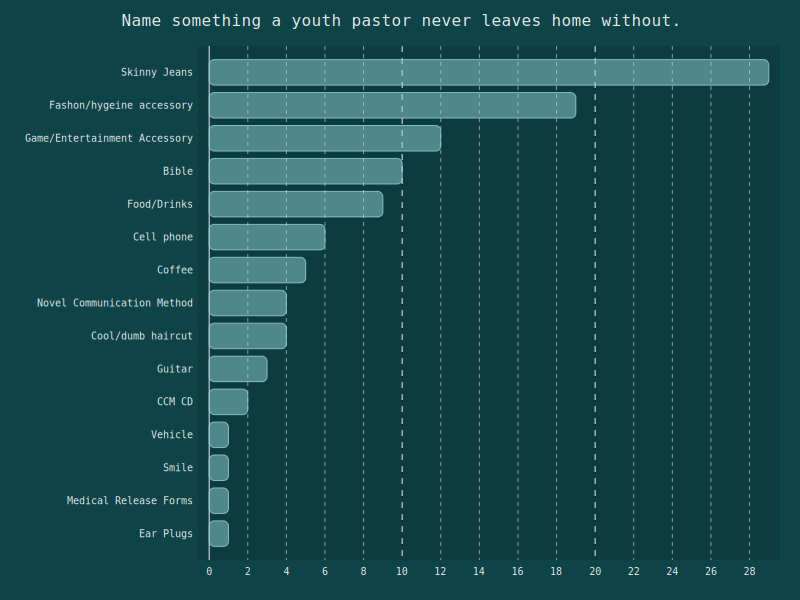
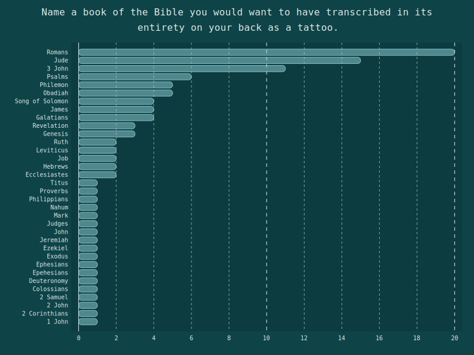
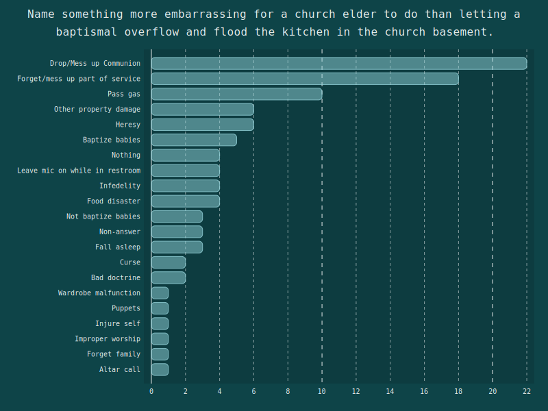
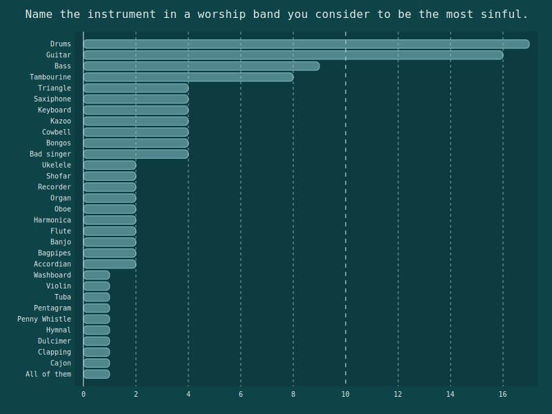
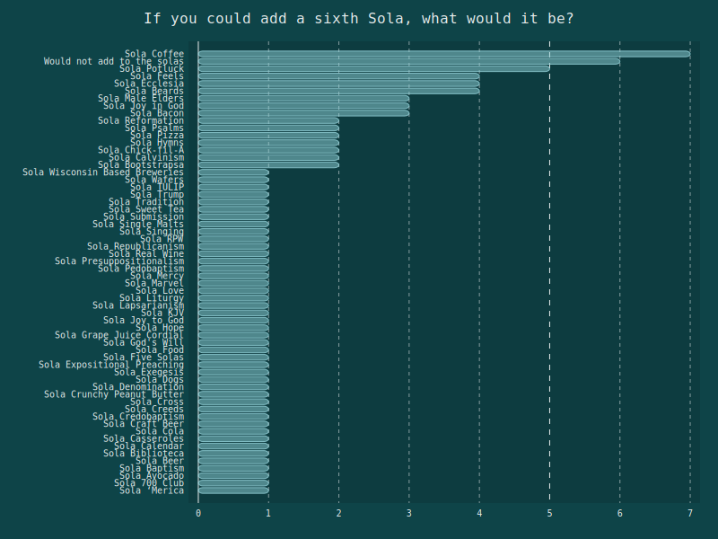
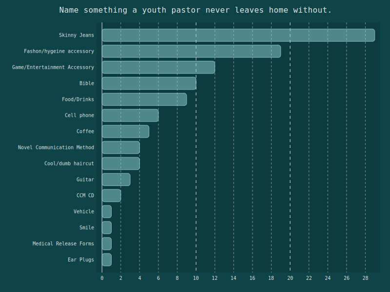
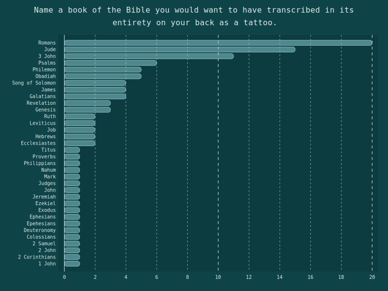
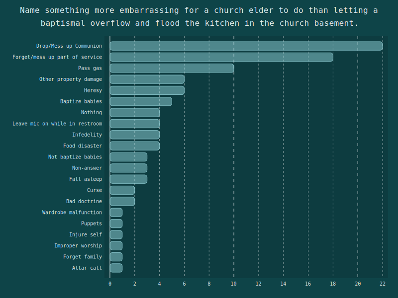
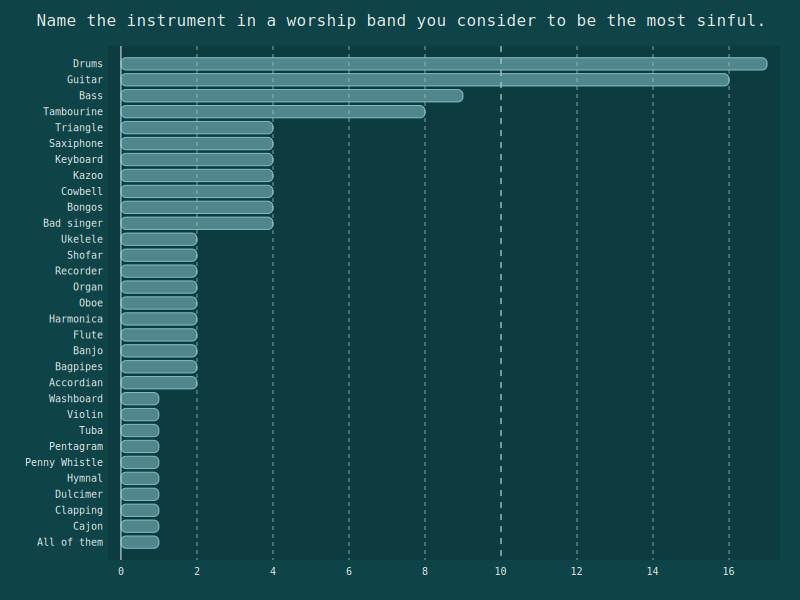
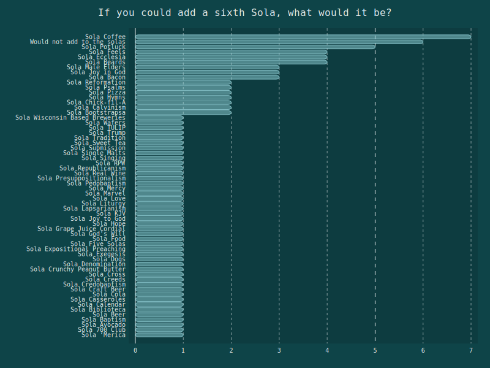

I host a monthly game night at my church. We are a small Reformed Baptist congregation in Southern Ohio. Ususally, game night consists of a selection of my board games and a couple TVs with video game systems set up on them. The purpose of game night is to give our congregants a night each month where we can get to know each other better, all for the Glory of God.
Twice I have run a "Bad Game Show" instead of our normal time of general gaming. The games in the show were heavily inspired by my favorite, now defunct, podcast, "Flip the table," particularly the "Battle of Wits" at the end of each show. The game show is titled "Bad Game Show" for a reason: we have members of our church of a wide range of theological knowledge. If the games in the show were based on purely knowledge of the Bible, or theological ideas, a certain portion of the church would blow everyone else out of the water. However, if the questions were related to the Bible and Christian culture, but the answers weren't going to give atvantage to the more learned member, everyone could have fun and have a chance to win.
For the most recent "Bad Game Show", which I ran in late April 2019, I thought it would be fun to do a "Family Feud" style game. In order to properly do "Family Feud", I needed to survey at least 100 people. So, to the internet did I turn. I first put my survey, found here, on the subreddits r/Reformed, r/ReformedBaptist, and r/Protestantism. Then, to get the last 30-40 responses, I had my pastor post the survey on the "Reformed Pub" on Facebook (because I don't have a Facebook profile any more).
The responses I got were amazing! I wanted for a while (over a month) to prepare something to let those that took the survey know the results. I have been busy, though, because I've been learning to program and what little spare time has been devoted to learning that. But since the current chapter in the book I am going through (Python Crash Course) is going over data visualization, I figured right now would be a great time to put what I learned in the book to practice.
I used the Pygal module in Python to generate the following charts. Because of the nature of "Famiy Feud", most of the answers needed to be categorized into larger groups to allow for answers that had more than 1-2 answers each. The following charts are the categorized answers. If you want to read the raw responses, you can always go back to the survey.
I feel I've already rambled on long enough to feel at home on a recipe website. Here are the results:
 










We all had a ton of fun at our game night and I want to truely thank anyone here who took the survey to make this possible.